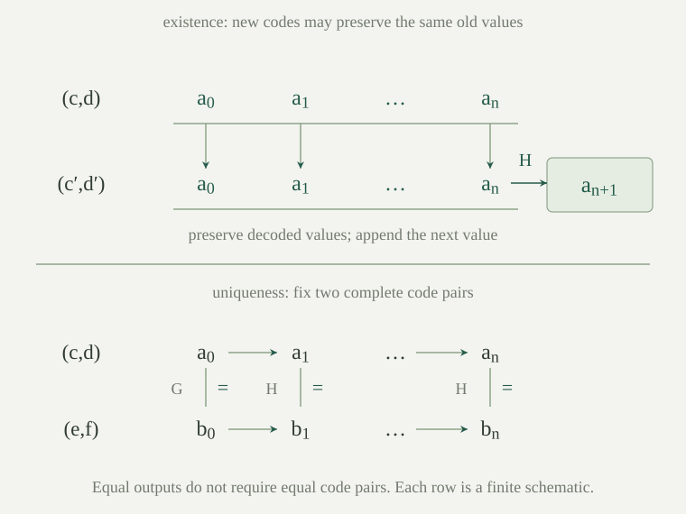

Work in the arithmetic language \(L_A=\{0,S,+,\cdot\}\), with Peano arithmetic \(\mathrm{PA}\). A bar over a tuple, as in \(\bar x\), denotes a finite list of variables; \(\overline{\bar a}\) denotes their numerical substitutions. A graph formula for \(f:\mathbb N^k\to\mathbb N\) has the displayed free variables \(F(\bar x,y)\).
We call \(F\) a uniform PA representation when it agrees with the graph of \(f\) in the standard natural numbers and
Write the concluding existence-and-uniqueness assertion as \(\forall\bar x\exists!y\,F(\bar x,y)\). It is one sentence and one derivability claim. It applies to every element of every PA-model, including its nonstandard elements. The earlier numeralwise theorem instead supplies a possibly different proof for each fixed ordinary input. Our chosen graphs will have the uniform PA theorem as well as the individual numerical PA proofs stated below.
Uniform totality alone does not specify how the function behaves at nonstandard inputs. Our construction will also prove the defining equations of the chosen primitive-recursive presentation. Two externally equal programs are not automatically interchangeable inside PA.
The internal arithmetic and history extension used here are developed in Induction and finite histories in Peano arithmetic. Our task is now to turn a finite recipe for a function into a graph formula and a single PA proof of its defining properties.
A \(\Sigma_1\) formula here has the form \(\exists\bar w\,\delta(\bar x,\bar w)\), where \(\delta\) is bounded. There may be no witnesses. We also call a formula \(\Sigma_1\) up to PA equivalence when PA proves its universal equivalence to such a displayed formula. This distinguishes a literal syntactic property from a normalization theorem. The standard-model graph construction explains the same finite-history description over the natural numbers; here we additionally prove the equivalence inside PA.
Conjunction, disjunction, existential quantification, and bounded quantification preserve this latter class. Negation of an arbitrary \(\Sigma_1\) formula is not included.
Rename witnesses apart and move their existential quantifiers to the front for conjunction and existential quantification. For disjunction, the same witnesses work in whichever branch holds; fill the unused witnesses by zero. Bounded existential quantification adds its bounded variable to the witnesses. For \(\forall i\lt n\exists\bar w\,\delta(i,\bar w)\), apply bounded-witness collection coordinate by coordinate. Quantify the resulting codes first. Decode each witness using \(B\), bounding the decoded value by its code parameter; all remaining quantifiers are bounded. Conversely, decoded witnesses immediately give each original existential assertion. Thus one obtains an explicit existential-prefix bounded matrix, with a PA proof of equivalence.
Strict bounds can first be reduced to inclusive bounds: \(i\lt t\) is \(i\le t\land i\ne t\). Thus a strict universal uses the endpoint guard \(i\ne t\to A\), and a strict existential uses \(i\ne t\land A\), under \(i\le t\). At \(t=0\) these give the empty universal and false existential without a predecessor operation. Bounds are arithmetic terms in the variables already available. When a bound was written using a graph abbreviation whose graph is already \(\Sigma_1\) up to PA equivalence, first introduce its value and graph witnesses existentially. Totality and uniqueness justify the replacement, and the graph's existential bounded description preserves the required complexity. The bounded matrix then uses the value variable as its term bound. Totality and uniqueness alone would not justify this complexity assertion for an arbitrary graph.
Consider first one witness in \(\forall i\lt n\exists u\,\delta(i,u,\bar x)\), with \(\delta\) bounded. The collection theorem replaces the separate witnesses by two codes. An explicit equivalent form is
For the forward direction, collect witnesses into a beta code. Its decoded values are at most \(c\), since each is a remainder of \(c\); hence they satisfy the new bounded existential. For the reverse direction, each bounded witness already supplies the witness needed in the original assertion. The displayed matrix is bounded: \(i\) is bounded by \(n\), \(u\) by \(c\), and the quotient in \(B\) by \(c\). For a tuple of \(r\) witnesses use \(r\) pairs of codes and \(r\) bounded decoding variables. The number \(r\) is fixed by the formula, rather than being an internal varying length.
The same construction works for \(i\le t\). No new unbounded quantifier remains inside that bounded universal. This is the reason that a computation with arbitrarily many internal steps can still have an existential-prefix bounded description: the witnesses for the steps are recorded together.
For a finite conjunction, concatenate the witness tuples and conjoin their bounded matrices. For a disjunction, concatenate the tuples and disjoin the matrices; choose zeros for the unused tuple. These changes use the nonempty arithmetic domain. A graph-defined bound must also have an existential bounded graph description: introduce its value and its witnesses before the matrix, then use the value variable as the actual bound. Uniform totality by itself says nothing about this syntactic complexity.
Fix a finite primitive-recursive presentation, using zero, successor, projections, composition and recursion in the final coordinate. The canonical graph construction associates a graph to each step of that presentation by the following rules. For zero, successor and projection use \(y=0\), \(y=Sx\), and \(y=x_j\). At a composition step use
At a recursion step use the finite-history construction below. Normalize each resulting formula by the normalization lemma, retaining its proved PA equivalence. The normalized formula is the chosen \(\Sigma_1\) graph. This is a construction from a presentation, rather than a choice of an arbitrary formula agreeing on standard numerals. The normalized formula is chosen together with a PA proof of equivalence to the particular raw graph. We do not assert that the normalization theorem singles out one unique formula string; all uses below retain that proved internal equivalence.
If the ingredient graphs have unique values at every input in PA, the displayed composition graph does too: choose each intermediate value, then the final value. Two sets of witnesses agree coordinate by coordinate by uniqueness of the \(G_j\), and their final outputs agree by uniqueness of \(F\). This is an ordinary first-order argument, including when \(r=0\).
Suppose PA proves totality and uniqueness of graphs \(G(\bar x,a)\) and \(H(\bar x,i,a,b)\). Define a history assertion by
Set
PA proves \(\forall\bar x\forall n\exists!y\,R(\bar x,n,y)\). It also proves the defining equations, understood as equivalences between the corresponding graph assertions:
If the ingredient graphs are \(\Sigma_1\) up to PA equivalence, so is \(R\).
Fix \(\bar x\). Induct internally on \(n\) in the formula \(\exists c\exists d\,\operatorname{Hist}(\bar x,n,c,d)\). For zero choose the unique \(G\)-value and put it at index zero using the history-extension theorem. For the step, decode the last value of the existing history, use totality of \(H\) to choose its successor value, and append that value. The unchanged initial segment still satisfies all earlier transitions; the chosen new value satisfies the final transition. Thus histories exist at every internal length.
For uniqueness compare any two histories through the same length. PA induction on \(i\le n\) proves their decoded values equal: at zero use uniqueness for \(G\); in the step use uniqueness for \(H\) after identifying the previous values. Their last decoded values, and hence their proposed outputs, coincide. This induction has the two pairs of code parameters fixed, so it is a permitted first-order induction.
For the zero equation, the endpoint and initial value coincide, and any \(G\)-value has a one-value history. For the successor equation, restricting a history to its first \(n+1\) values gives the forward implication; appending a value as above gives the reverse implication. Finally replace the ingredient graphs by their existential bounded forms and apply the normalization lemma to the bounded sequence of transitions and its witnesses.
The finite-history graph is total and single-valued because PA can prove both that a history exists through each length and that any two completed histories agree at each position through that length.
The existence induction fixes \(\bar x\) and says that a history satisfying \(G\) at zero and \(H\) at each earlier step exists through the current index. At a step, the old code pair is allowed to change. The extension theorem preserves the values at earlier indices, which is exactly what the transition assertions use. It would be too restrictive to require the same code numbers at every stage.
The uniqueness induction instead fixes two completed code pairs. Its assertion at \(i\) is: if \(i\le n\), their decoded values at \(i\) coincide. At zero, both values satisfy \(G\). At a successor, their previous values coincide by induction, and uniqueness for \(H\) forces the next values to coincide. The decoder itself is total and single-valued at every internal index; the histories need not use the same codes.
For the recursion equation in the forward direction, the same codes already satisfy all transitions up to \(n\), and decoding their value at \(n\) supplies the intermediate output. For the reverse direction, append the proposed next value at index \(Sn\). Earlier transition assertions use indices at most \(n\), so the preservation clause applies to every required decoder occurrence. At \(n=0\), no transition is demanded, but the initial and final decoded values refer to the same position.
These invariant checks separate the existence of a history, the uniqueness of its final answer and the defining equations. None follows merely from knowing what the graph means on standard inputs.

For every primitive-recursive presentation of \(f:\mathbb N^k\to\mathbb N\), the preceding construction gives a \(\Sigma_1\) graph \(F\) such that
PA also proves the composition and recursion equations of that presentation. For every ordinary input \(\bar a\), it proves
Induct externally on the finite construction of \(f\). The initial graph formulas have unique outputs by equality and the successor term. Composition is the composition construction. Recursion, including its defining equations, is the recursion theorem. Normalization preserves their PA theorems. The same induction shows that the chosen graph has the correct standard interpretation. For a fixed standard input, the construction's equations can be unfolded through its actual finite computation to prove the correct numerical instance. Combining it with the uniform uniqueness theorem yields the displayed output identity.
There are two different inductions in this proof. The metatheoretic induction constructs a formula and a finite PA proof from a finite presentation. At each recursion step, that proof contains an induction inside PA, covering all its internal computation lengths. The latter is the additional strength absent from a mere list of numeralwise proofs.
Let \(F(\bar x,y)\) be any arithmetic graph with PA-provable uniform totality and uniqueness. Adding a new function symbol \(f\) with the defining axiom \(F(\bar x,f(\bar x))\) is conservative over PA: it creates no new theorem in the original language. One may also use induction for formulas containing the new symbol.
Every PA-model has a unique expansion interpreting \(f\): assign the unique value supplied by \(F\). To translate an expanded formula back, replace each added function application by a fresh value variable and its graph assertion, starting with the innermost application. Totality and uniqueness give satisfaction equivalence by induction on terms and formulas. An induction instance in the expanded language consequently translates to an induction instance for an arithmetic formula, with the same parameters. Thus every PA-model expands to a model of the defining axiom and all expanded induction instances. An original-language consequence holds in every PA-model and therefore has a PA proof by completeness.
This justifies graph abbreviations throughout the argument. It does not assert that every true identity involving the added functions is provable. Such identities must follow from their proved defining equations, arithmetic laws and induction.
The general conservation theorem for definitions applies to any first-order theory. Its explicit elimination construction handles nested terms and arbitrary packages of new symbols; expanded induction here is the additional arithmetic argument.
Define \(d(0)=0\) and \(d(Sn)=S(S(d(n)))\). Show inside PA that its chosen graph defines \(n+n\), including at nonstandard inputs. Which part of the argument would be missing if one knew only the graph's standard interpretation?
Use the function abbreviation justified by graph conservativity. Induct internally on \(n\) in \(d(n)=n+n\). The base is \(0=0+0\). In the step, the proved recursion equation gives \(d(Sn)=S(S(d(n)))\). The induction hypothesis and the addition equations turn this into \(Sn+Sn\). The resulting universal theorem holds at every element of every PA-model. Agreement at each standard numeral alone provides none of these internal induction steps or recursion equations.
Suppose two chosen graphs \(F,G\) both have PA-provable uniform totality and uniqueness and define the same ordinary numerical function. Does this alone justify replacing \(F\) by \(G\) throughout a PA proof?
No. Replacement requires the internal theorem \(\mathrm{PA}\vdash\forall\bar x\forall y\,(F(\bar x,y)\leftrightarrow G(\bar x,y))\). Agreement in the standard model establishes only truth of that sentence, not its derivability. For a sufficient condition, suppose both graphs satisfy the same base equation and the same successor equation using a single step graph \(H\). Induct in PA on \(n\) in \(\forall y\,(F(\bar x,n,y)\leftrightarrow G(\bar x,n,y))\). The base equations give the zero case. At a successor, expand the two equations into existential intermediate values; the induction hypothesis changes \(F(\bar x,n,a)\) to \(G(\bar x,n,a)\) under the same existential and the same \(H\). Both directions follow. The formulas \(F,G\) are arbitrary arithmetic graphs here, not necessarily graphs constructed from our presentation datatype. More complicated implementations need their own comparison proof.